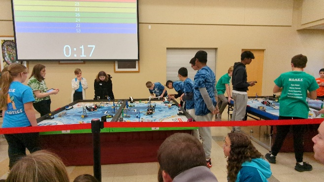

Robotics
FIRST LEGO League
Program developer for team missions, using Scratch-based code to control the robot during competition.
Competition experience included planning missions, coding robot behavior, testing, and collaborating with teammates.